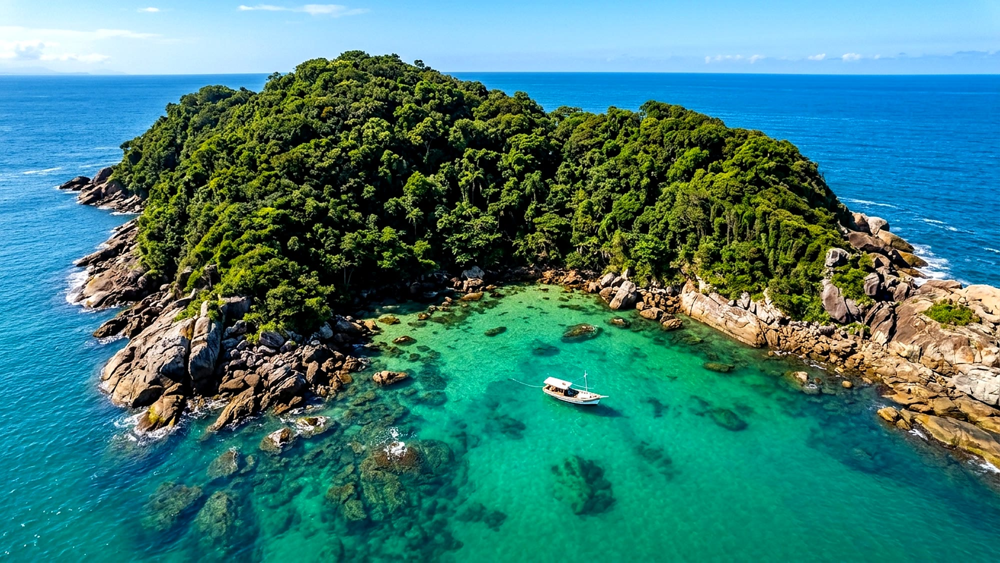
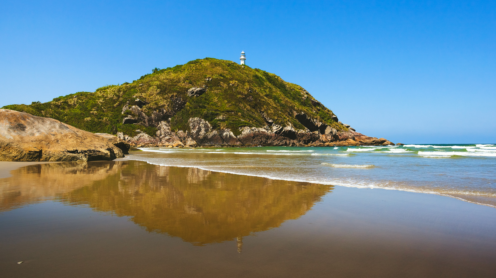
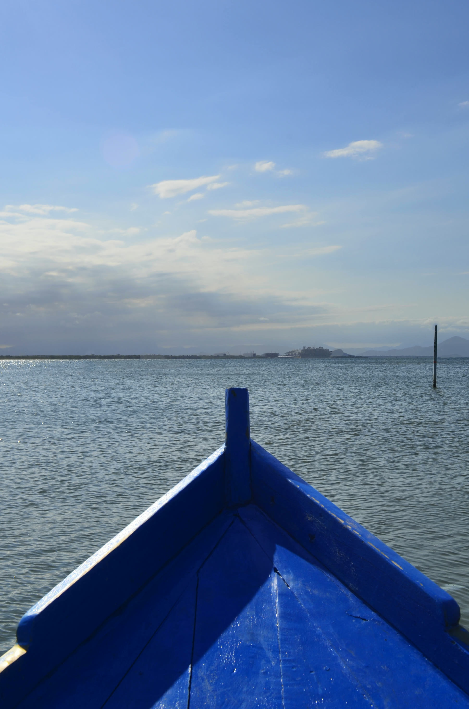
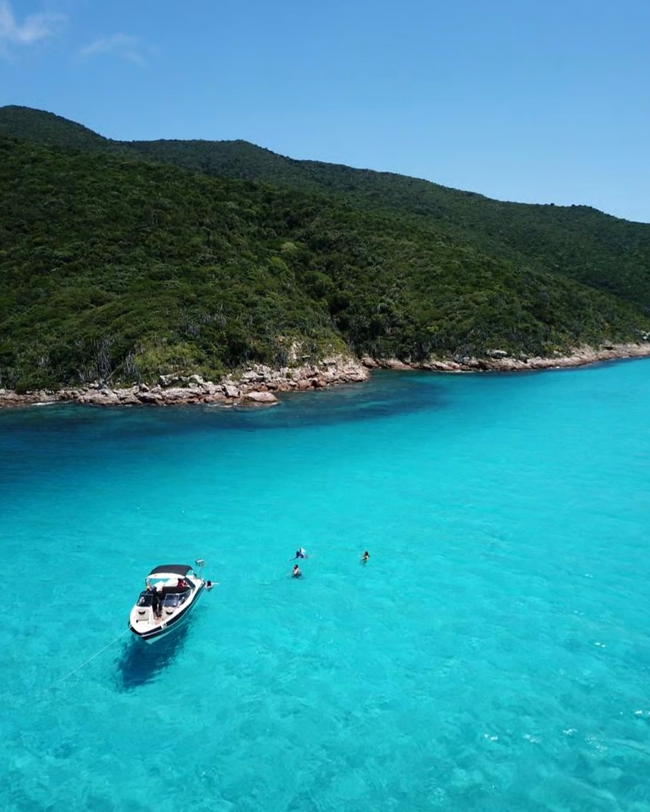
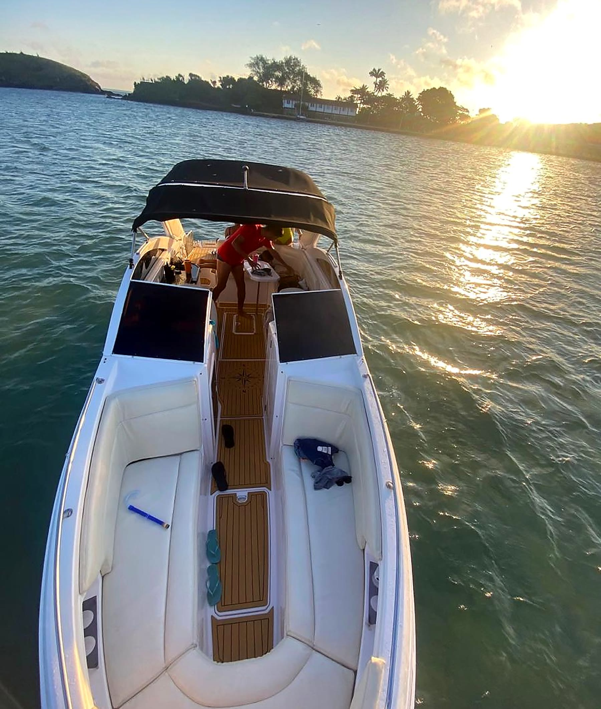
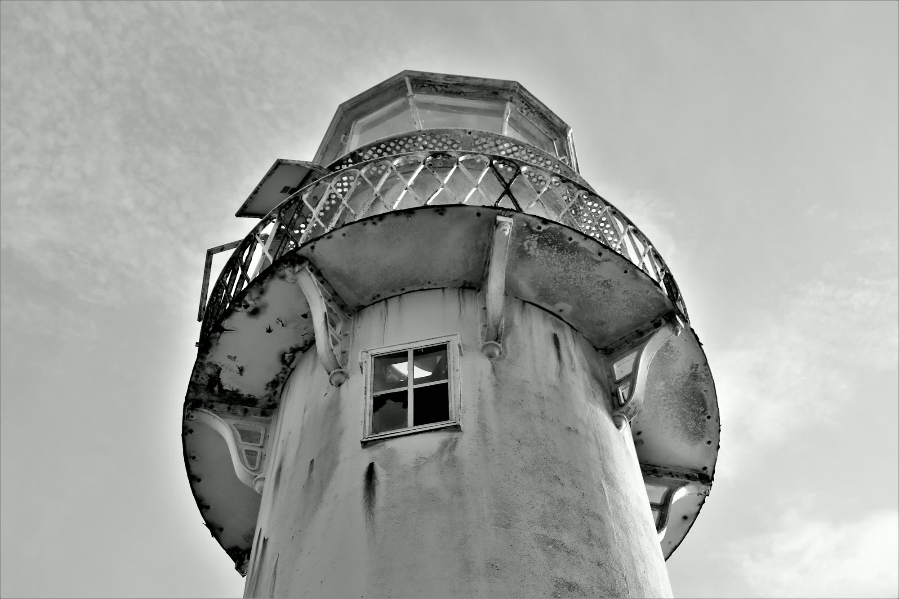
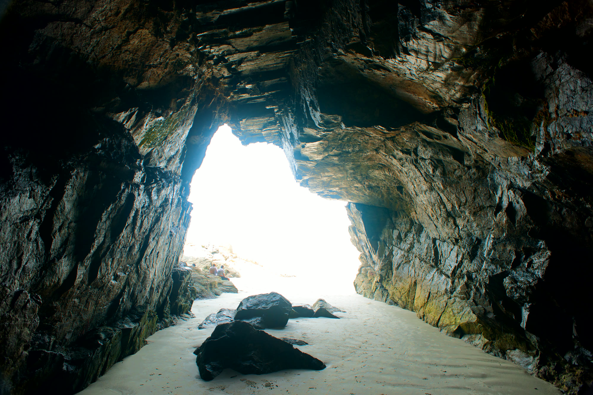
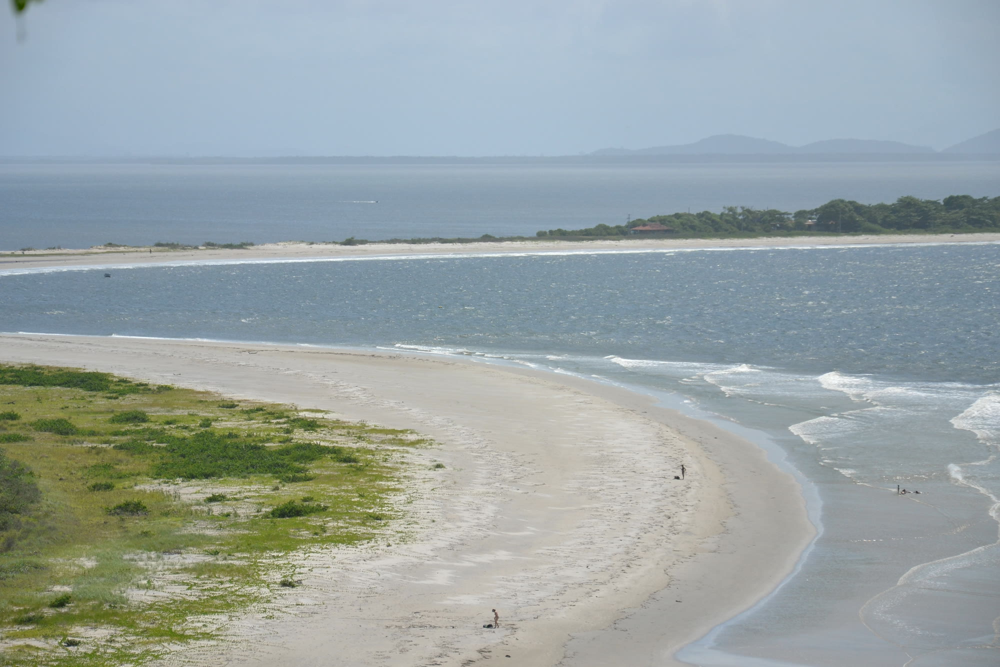
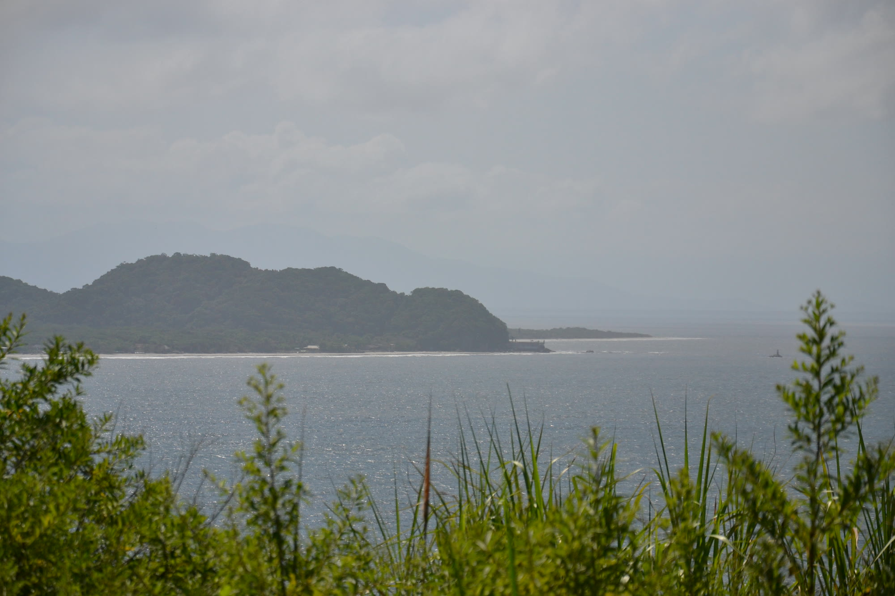

Mais pedido

Volta na Ilha do Mel 360°
Baía dos Golfinhos, Gruta das Encantadas, Farol das Conchas e Fortaleza em um só roteiro.
Consultar Volta na Ilha
Lanchas privativas, Volta na Ilha 360° e travessia rápida saindo de Pontal do Sul e Paranaguá.

Conhecemos cada enseada da Baía de Paranaguá e da Ilha do Mel. Embarcações credenciadas, marinheiros experientes e atendimento direto pelo WhatsApp.
De lanchas privativas a roteiros completos pelos cartões-postais da Ilha do Mel.

Baía dos Golfinhos, Gruta das Encantadas, Farol das Conchas e Fortaleza em um só roteiro.
Consultar Volta na Ilha
Roteiro personalizado só para a sua turma ou família, com paradas livres para banho de mar.
Consultar Lancha
Translado rápido para Encantadas ou Nova Brasília no horário que você precisar.
Agendar TravessiaNatureza preservada, história imperial e encontro com os botos na baía.

Construído em 1872 no alto do morro, com a vista panorâmica mais famosa da ilha.

Formação rochosa esculpida pelo mar com passarela e praias de águas calmas ao redor.

Águas abrigadas onde os botos-cinza nadam bem próximos às embarcações.

Muralhas e canhões históricos do século XVIII de frente para o canal da baía.
Arraste para o lado para ver todas as paradas.
Selecione seu roteiro abaixo e fale direto com a equipe da Odara Turismo Marítimo.
"Passeio maravilhoso pela Ilha do Mel! Vimos vários golfinhos na baía, barco muito seguro e marinheiro super atencioso com a família."
"Pontualidade nota dez! Fizemos a travessia e o passeio de lancha até a Fortaleza e Gruta das Encantadas sem fila e com total tranquilidade."
"Atendimento rápido pelo WhatsApp e muita segurança na navegação. Recomendo demais para quem quer conhecer a Ilha do Mel de verdade."
Atendemos diretamente nos trapiches da Ilha do Mel (Encantadas e Nova Brasília), além de saídas agendadas pelo Terminal de Pontal do Sul e Paranaguá.
Sim! Na Baía dos Golfinhos, entre a Ilha do Mel e a Ilha das Peças, é muito comum avistar os botos-cinza nadando próximos ao barco.
Totalmente. Nossas embarcações são homologadas pela Marinha, possuem coletes salva-vidas para todas as idades e navegamos por águas abrigadas da baía.